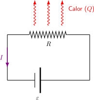

5.3 Efecto Joule#
Cuando una corriente eléctrica circula a través de un conductor que posee resistencia, los electrones que forman esta corriente experimentan constantes colisiones inelásticas con los iones de la red cristalina del material. En cada colisión, parte de la energía cinética de los electrones se transfiere a la red, aumentando su energía vibracional. A nivel macroscópico, este incremento de energía interna se manifiesta como un aumento en la temperatura del conductor y la consecuente emisión de calor hacia el entorno. A este fenómeno se le conoce como Efecto Joule.
Análisis cuantitativo#
Para cuantificar la energía disipada, consideramos un resistor de resistencia \(R\) por el cual circula una corriente constante \(I\). La diferencia de potencial \(\Delta V\) entre los extremos del resistor representa el trabajo realizado por unidad de carga.
La potencia eléctrica \(P\) (energía transferida por unidad de tiempo) se define como:
Aplicando la Ley de Ohm (\(\Delta V = I \cdot R\)), podemos expresar la potencia disipada específicamente en forma de calor por el resistor:
La energía total \(Q\) disipada en forma de calor durante un intervalo de tiempo \(\Delta t\) es simplemente la potencia multiplicada por el tiempo:
Representación gráfica#
A continuación, se presenta un esquema de un circuito básico ilustrando el Efecto Joule. La fuente de fuerza electromotriz (\(\varepsilon\)) provee la energía para establecer la corriente \(I\), mientras que el resistor \(R\) disipa esa energía en forma de calor (\(Q\)).
{kind=link}

Show code cell source
from IPython.display import display, HTML
simulacion_joule_v3_html = """
<div style="border: 1px solid #e0e0e0; padding: 20px; border-radius: 8px; background-color: #f8f9fa; font-family: -apple-system, BlinkMacSystemFont, 'Segoe UI', Roboto, Arial, sans-serif;">
<h3 style="margin-top:0; color: #2c3e50;">Módulo Interactivo STEM: Efecto Joule</h3>
<p style="font-size: 0.95em; color: #555; margin-bottom: 15px;">Observa cómo la energía eléctrica se transforma en calor. Analiza qué ocurre con la potencia disipada al modificar el voltaje de la fuente o la resistencia del elemento calefactor.</p>
<div style="display: flex; gap: 20px; flex-wrap: wrap; margin-bottom: 15px;">
<div style="flex: 1.5; min-width: 300px;">
<div style="margin-bottom: 8px;">
<label style="font-weight: 600; display: inline-block; width: 180px;">Voltaje (V): <span id="joule_valV_j3" style="font-weight: normal;">220</span> V</label>
<input type="range" id="joule_V_j3" min="0" max="220" step="10" value="220" style="width: 40%; vertical-align: middle;">
</div>
<div style="margin-bottom: 8px;">
<label style="font-weight: 600; display: inline-block; width: 180px;">Resistencia (R): <span id="joule_valR_j3" style="font-weight: normal;">100</span> Ω</label>
<input type="range" id="joule_R_j3" min="10" max="250" step="10" value="100" style="width: 40%; vertical-align: middle;">
</div>
<div style="margin-top: 15px;">
<button id="joule_btn_reset_j3" style="background-color: #dc3545; color: white; border: none; padding: 6px 15px; border-radius: 4px; cursor: pointer; font-size: 0.9em;">Reiniciar Sistema</button>
</div>
</div>
<div style="flex: 1; min-width: 220px; font-size: 0.95em; background: #fff; padding: 10px; border-radius: 6px; border: 1px solid #ccc;">
<div style="margin-bottom: 5px;"><b>Corriente (I):</b> <span id="joule_valI_j3" style="color: #0d6efd; font-weight: bold;">2.20</span> A</div>
<div style="margin-bottom: 5px;"><b>Potencia (P):</b> <span id="joule_valP_j3" style="color: #dc3545; font-weight: bold;">484</span> W</div>
<hr style="border: 0; border-top: 1px solid #eee; margin: 8px 0;">
<div style="margin-bottom: 5px;"><b>Temp. Entorno:</b> <span id="joule_valT_j3" style="color: #ff8c00; font-weight: bold;">20.0</span> °C</div>
<div style="font-size: 0.8em; color: #777; margin-top: 5px;">* P = V² / R | Q = P · Δt</div>
</div>
</div>
<div style="text-align: center; position: relative;">
<canvas id="joule_canvas_j3" width="600" height="300" style="background: #1e1e1e; border: 1px solid #ccc; border-radius: 4px; box-shadow: 0 2px 5px rgba(0,0,0,0.05); max-width: 100%;"></canvas>
</div>
</div>
<script>
setTimeout(function() {
const canvas = document.getElementById('joule_canvas_j3');
if (!canvas) return;
const ctx = canvas.getContext('2d');
const slider_V = document.getElementById('joule_V_j3');
const slider_R = document.getElementById('joule_R_j3');
const btn_reset = document.getElementById('joule_btn_reset_j3');
const val_V = document.getElementById('joule_valV_j3');
const val_R = document.getElementById('joule_valR_j3');
const val_I = document.getElementById('joule_valI_j3');
const val_P = document.getElementById('joule_valP_j3');
const val_T = document.getElementById('joule_valT_j3');
let temperature = 20.0;
let heat_particles = [];
let electron_offset = 0; // Controla el avance de las partículas
function getResistorColor(temp) {
if (temp < 30) return "#555555";
if (temp < 100) {
let r = Math.floor(85 + (temp - 30) * 2.4);
return `rgb(${r}, 85, 85)`;
}
if (temp < 300) {
let g = Math.floor(85 + (temp - 100) * 0.85);
return `rgb(255, ${g}, 85)`;
}
return "rgb(255, 255, 200)";
}
// Motor de Trayectoria Estricta
function getElectronPosition(d, cx, cy, ch) {
// Segmentos del circuito
let l1 = ch - cy; // Subida izquierda
let l2 = 70; // Avance horizontal izquierdo
let l3 = 160; // Cruce por el resistor
let l4 = 70; // Avance horizontal derecho
let l5 = ch - cy; // Bajada derecha
if (d < l1) return { x: cx - 150, y: ch - d };
d -= l1;
if (d < l2) return { x: cx - 150 + d, y: cy };
d -= l2;
if (d < l3) return { x: cx - 80 + d, y: cy };
d -= l3;
if (d < l4) return { x: cx + 80 + d, y: cy };
d -= l4;
if (d <= l5) return { x: cx + 150, y: cy + d };
return { x: cx + 150, y: ch }; // Salvaguarda
}
btn_reset.addEventListener('click', () => {
temperature = 20.0;
heat_particles = [];
});
function animate() {
ctx.clearRect(0, 0, canvas.width, canvas.height);
let V = parseFloat(slider_V.value);
let R = parseFloat(slider_R.value);
let I = V / R;
let P = (V * V) / R;
val_V.innerText = V;
val_R.innerText = R;
val_I.innerText = I.toFixed(2);
val_P.innerText = P.toFixed(0);
let deltaT = P * 0.00015;
temperature += deltaT;
let cooling = (temperature - 20) * 0.005;
temperature -= cooling;
if(temperature < 20) temperature = 20;
val_T.innerText = temperature.toFixed(1);
let cx = canvas.width / 2;
let cy = canvas.height / 2;
// ================== DIBUJO DE CABLES BASE ==================
ctx.beginPath();
ctx.lineJoin = "round";
// Cable izquierdo
ctx.moveTo(cx - 150, canvas.height + 10);
ctx.lineTo(cx - 150, cy);
ctx.lineTo(cx - 80, cy);
// Cable derecho
ctx.moveTo(cx + 80, cy);
ctx.lineTo(cx + 150, cy);
ctx.lineTo(cx + 150, canvas.height + 10);
ctx.strokeStyle = "#555";
ctx.lineWidth = 4;
ctx.stroke();
// ================== DIBUJO DEL RESISTOR ==================
let resColor = getResistorColor(temperature);
ctx.strokeStyle = resColor;
ctx.lineWidth = 8;
ctx.lineJoin = "round";
ctx.beginPath();
ctx.moveTo(cx - 80, cy);
ctx.lineTo(cx - 60, cy - 20);
ctx.lineTo(cx - 40, cy + 20);
ctx.lineTo(cx - 20, cy - 20);
ctx.lineTo(cx, cy + 20);
ctx.lineTo(cx + 20, cy - 20);
ctx.lineTo(cx + 40, cy + 20);
ctx.lineTo(cx + 60, cy - 20);
ctx.lineTo(cx + 80, cy);
ctx.stroke();
if(temperature > 50) {
ctx.shadowBlur = Math.min((temperature - 50) / 2, 50);
ctx.shadowColor = resColor;
ctx.stroke();
ctx.shadowBlur = 0;
}
// ================== ELECTRONES (CÍRCULOS AZULES) ==================
if (I > 0) {
let total_distance = (canvas.height - cy) * 2 + 70 * 2 + 160;
let num_electrons = 25; // Cantidad de partículas visibles
let spacing = total_distance / num_electrons;
// La velocidad de las partículas depende de la corriente
electron_offset = (electron_offset + I * 1.5) % spacing;
ctx.fillStyle = "#0d6efd";
for (let i = 0; i < num_electrons; i++) {
let d = electron_offset + i * spacing;
let pos = getElectronPosition(d, cx, cy, canvas.height);
ctx.beginPath();
ctx.arc(pos.x, pos.y, 4, 0, Math.PI * 2);
ctx.fill();
}
}
// ================== ONDAS DE CALOR ==================
if (P > 0 && Math.random() < P / 1000) {
heat_particles.push({
x: cx - 60 + Math.random() * 120,
y: cy - 30,
speed: 1 + Math.random() * 2,
alpha: 0.8,
size: 10 + Math.random() * 15
});
}
heat_particles.forEach((p, index) => {
p.y -= p.speed;
p.alpha -= 0.01;
p.x += Math.sin(p.y / 10) * 1.5;
ctx.fillStyle = `rgba(255, 69, 0, ${p.alpha})`;
ctx.beginPath();
ctx.arc(p.x, p.y, p.size, 0, Math.PI * 2);
ctx.fill();
if (p.alpha <= 0) heat_particles.splice(index, 1);
});
// ================== TERMÓMETRO VISUAL ==================
let th_x = canvas.width - 50;
let th_y = 40;
let th_h = 200;
ctx.fillStyle = "#333";
ctx.fillRect(th_x, th_y, 15, th_h);
let fillPercent = Math.min((temperature - 20) / 280, 1);
let fillHeight = th_h * fillPercent;
ctx.fillStyle = "#dc3545";
ctx.fillRect(th_x, th_y + th_h - fillHeight, 15, fillHeight);
ctx.beginPath();
ctx.arc(th_x + 7.5, th_y + th_h + 5, 12, 0, Math.PI*2);
ctx.fill();
ctx.fillStyle = "#fff";
ctx.font = "10px Arial";
ctx.fillText("Max", th_x - 25, th_y + 10);
ctx.fillText("20°C", th_x - 30, th_y + th_h);
requestAnimationFrame(animate);
}
slider_V.addEventListener('input', () => {});
slider_R.addEventListener('input', () => {});
animate();
}, 150);
</script>
"""
display(HTML(simulacion_joule_v3_html))
Módulo Interactivo STEM: Efecto Joule
Observa cómo la energía eléctrica se transforma en calor. Analiza qué ocurre con la potencia disipada al modificar el voltaje de la fuente o la resistencia del elemento calefactor.
Preguntas de Análisis#
Show code cell source
from IPython.display import display, HTML
quiz_joule_html = """
<style>
.fisi-quiz-container {
border: 1px solid #e0e0e0;
padding: 15px;
margin-bottom: 25px;
border-radius: 8px;
background-color: #f8f9fa;
font-family: -apple-system, BlinkMacSystemFont, "Segoe UI", Roboto, Arial, sans-serif;
}
.fisi-question {
font-weight: 600;
margin-bottom: 15px;
color: #2c3e50;
}
.fisi-option {
margin-bottom: 10px;
display: flex;
align-items: flex-start;
cursor: pointer;
}
.fisi-option input {
margin-top: 4px;
margin-right: 10px;
}
.fisi-check-btn {
background-color: #f73bc5;
color: white;
border: none;
padding: 8px 20px;
border-radius: 4px;
cursor: pointer;
font-size: 14px;
margin-top: 10px;
font-weight: 500;
}
.fisi-check-btn:hover { background-color: #ab2988; }
.fisi-feedback {
margin-top: 15px;
padding: 12px;
border-radius: 6px;
display: none;
font-size: 0.95em;
}
</style>
<script>
if (typeof window.checkFisiQuiz === 'undefined') {
window.checkFisiQuiz = function(radioName, feedbackId) {
var radios = document.getElementsByName(radioName);
var selected = null;
var feedbackDiv = document.getElementById(feedbackId);
for (var i = 0; i < radios.length; i++) {
if (radios[i].checked) {
selected = radios[i];
break;
}
}
feedbackDiv.style.display = 'block';
if (!selected) {
feedbackDiv.style.backgroundColor = '#fff3cd';
feedbackDiv.style.color = '#856404';
feedbackDiv.style.border = '1px solid #ffeeba';
feedbackDiv.innerHTML = '⚠️ Por favor, selecciona una opción.';
return;
}
var isCorrect = selected.getAttribute('data-correct') === 'true';
var msg = selected.getAttribute('data-fb');
if (isCorrect) {
feedbackDiv.style.backgroundColor = '#d4edda';
feedbackDiv.style.color = '#155724';
feedbackDiv.style.border = '1px solid #c3e6cb';
feedbackDiv.innerHTML = '✅ <strong>¡Correcto!</strong><br>' + msg;
} else {
feedbackDiv.style.backgroundColor = '#f8d7da';
feedbackDiv.style.color = '#721c24';
feedbackDiv.style.border = '1px solid #f5c6cb';
feedbackDiv.innerHTML = '❌ <strong>Incorrecto.</strong><br>' + msg;
}
};
}
</script>
<div class="fisi-quiz-container">
<div class="fisi-question">
1. Desde el punto de vista del modelo microscópico, ¿cuál es el mecanismo físico fundamental que da origen al Efecto Joule cuando una corriente eléctrica circula por un conductor con resistencia?
</div>
<label class="fisi-option">
<input type="radio" name="qjoule1" value="a" data-correct="true" data-fb="¡Exacto! El calor no aparece por arte de magia. Los electrones ganan energía cinética debido al campo eléctrico, pero chocan constantemente (colisiones inelásticas) con los iones de la red atómica. En cada choque, le transfieren parte de esa energía a la red, incrementando su vibración interna, lo que a nivel macroscópico se percibe como un aumento de temperatura.">
<span>Las colisiones inelásticas de los electrones con los iones de la red cristalina, transfiriendo parte de su energía cinética y aumentando la energía vibracional del material.</span>
</label>
<label class="fisi-option">
<input type="radio" name="qjoule1" value="b" data-fb="Incorrecto. El Efecto Joule es un fenómeno volumétrico que ocurre en todo el interior del material debido a los choques atómicos, no a una fricción externa con el aire.">
<span>La fricción mecánica que se produce exclusivamente en la superficie exterior del conductor al interactuar el flujo de electrones con el medio ambiente o el aislante.</span>
</label>
<label class="fisi-option">
<input type="radio" name="qjoule1" value="c" data-fb="Incorrecto. Los electrones tienen una velocidad de deriva extremadamente lenta (milímetros por segundo), nunca se acercan a la velocidad de la luz en un conductor doméstico.">
<span>La aceleración continua de los electrones libres hasta que alcanzan velocidades cercanas a la de la luz, liberando el exceso de masa como fotones infrarrojos.</span>
</label>
<label class="fisi-option">
<input type="radio" name="qjoule1" value="d" data-fb="Incorrecto. La conducción eléctrica es un proceso netamente físico. No ocurren reacciones químicas irreversibles que alteren la identidad de los átomos del cobre o del resistor.">
<span>La reacción química irreversible entre los electrones de conducción y el núcleo atómico del metal, lo que libera un calor constante y proporcional a la carga eléctrica.</span>
</label>
<button class="fisi-check-btn" onclick="checkFisiQuiz('qjoule1', 'feedback-joule1')">Comprobar</button>
<div class="fisi-feedback" id="feedback-joule1"></div>
</div>
<div class="fisi-quiz-container">
<div class="fisi-question">
2. Tienes un elemento calefactor conectado directamente a un enchufe de red que provee un voltaje constante (como se aprecia en la simulación al fijar el slider V). Si decides reemplazar este elemento por uno que tiene una MAYOR resistencia eléctrica (R), ¿qué ocurrirá con la potencia disipada en forma de calor (P)?
</div>
<label class="fisi-option">
<input type="radio" name="qjoule2" value="a" data-fb="Incorrecto. Cuidado con esa fórmula. Si usas P = I²R, debes recordar que al subir la resistencia conectada a un voltaje constante, la corriente 'I' disminuye drásticamente, por lo que la potencia global no aumenta.">
<span>Aumentará, porque de acuerdo a la fórmula P = I²R, la potencia es directamente proporcional al aumento de la resistencia del material.</span>
</label>
<label class="fisi-option">
<input type="radio" name="qjoule2" value="b" data-fb="Incorrecto. Aunque el concepto de mayores obstáculos es real, la consecuencia es que pasarán muchos menos electrones por segundo (baja la corriente drásticamente), por lo que el calor total generado será menor.">
<span>Aumentará de forma exponencial, ya que los electrones encontrarán mayores obstáculos en la red y liberarán mucha más energía cinética individual al chocar.</span>
</label>
<label class="fisi-option">
<input type="radio" name="qjoule2" value="c" data-correct="true" data-fb="¡Correcto! Esta es una de las 'trampas' conceptuales más comunes. Si el sistema está conectado a un voltaje constante, la ecuación adecuada a analizar es P = V² / R. Al aumentar el denominador (R), la potencia disipada (P) es inversamente proporcional y, por lo tanto, disminuirá. Pasará tan poca corriente que se generará menos calor total.">
<span>Disminuirá, porque al estar sometido a un voltaje constante, la corriente se reduce. Según la relación P = V² / R, la potencia es inversamente proporcional a la resistencia.</span>
</label>
<label class="fisi-option">
<input type="radio" name="qjoule2" value="d" data-fb="Incorrecto. El voltaje es el que proporciona la energía por unidad de carga, pero la resistencia dicta cuánta carga fluye por unidad de tiempo. Ambas variables definen la potencia final.">
<span>Se mantendrá exactamente igual, ya que el voltaje proporcionado por la fuente doméstica es el único factor absoluto que determina la emisión de calor en el circuito.</span>
</label>
<button class="fisi-check-btn" onclick="checkFisiQuiz('qjoule2', 'feedback-joule2')">Comprobar</button>
<div class="fisi-feedback" id="feedback-joule2"></div>
</div>
<div class="fisi-quiz-container">
<div class="fisi-question">
3. La potencia eléctrica (P) indica la "rapidez" con la que se transfiere la energía (Joules por segundo o Watts). Sin embargo, si deseas conocer la energía térmica total (Q) que entregó un calefactor a una habitación, ¿qué otra variable física es absolutamente indispensable incorporar al cálculo?
</div>
<label class="fisi-option">
<input type="radio" name="qjoule3" value="a" data-fb="Incorrecto. Aunque la masa del electrón es un dato microscópico real, a nivel de circuito ya está empaquetada dentro de las variables macroscópicas de corriente y potencia. No se requiere calcularla explícitamente.">
<span>La masa física total de los electrones que conforman la corriente eléctrica que circuló por el resistor.</span>
</label>
<label class="fisi-option">
<input type="radio" name="qjoule3" value="b" data-correct="true" data-fb="¡Exacto! La energía total disipada es simplemente la potencia (energía por unidad de tiempo) multiplicada por el tiempo de funcionamiento. La relación es Q = P · Δt (o Q = I²R · Δt). Un calefactor potente encendido 1 minuto puede entregar la misma energía total que uno menos potente encendido durante 1 hora.">
<span>El intervalo de tiempo (Δt) durante el cual la corriente estuvo circulando activamente por el elemento resistivo.</span>
</label>
<label class="fisi-option">
<input type="radio" name="qjoule3" value="c" data-fb="Incorrecto. La constante dieléctrica es relevante para el almacenamiento de energía en condensadores (capacitancia), no para la disipación de calor activo en un resistor óhmico.">
<span>La constante dieléctrica (K) del aire que rodea físicamente al elemento calefactor para evaluar la transferencia de calor.</span>
</label>
<label class="fisi-option">
<input type="radio" name="qjoule3" value="d" data-fb="Incorrecto. El volumen de la red cristalina determina la resistencia total del material, pero si ya conoces la potencia P, el volumen ya está implícitamente considerado. Falta el factor tiempo.">
<span>El volumen geométrico total de la red cristalina que compone internamente el material del conductor calefactor.</span>
</label>
<button class="fisi-check-btn" onclick="checkFisiQuiz('qjoule3', 'feedback-joule3')">Comprobar</button>
<div class="fisi-feedback" id="feedback-joule3"></div>
</div>
"""
display(HTML(quiz_joule_html))